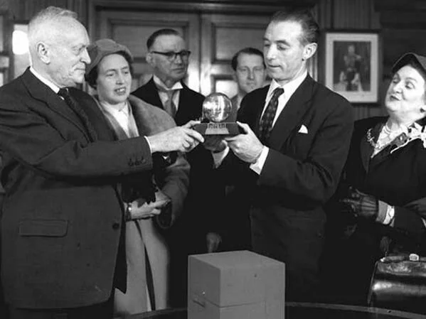
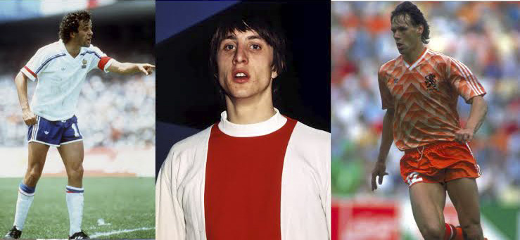
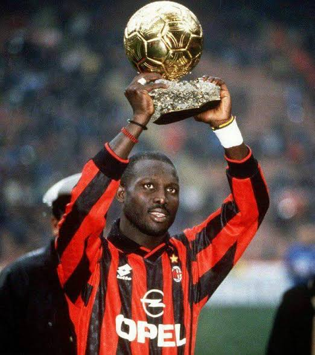
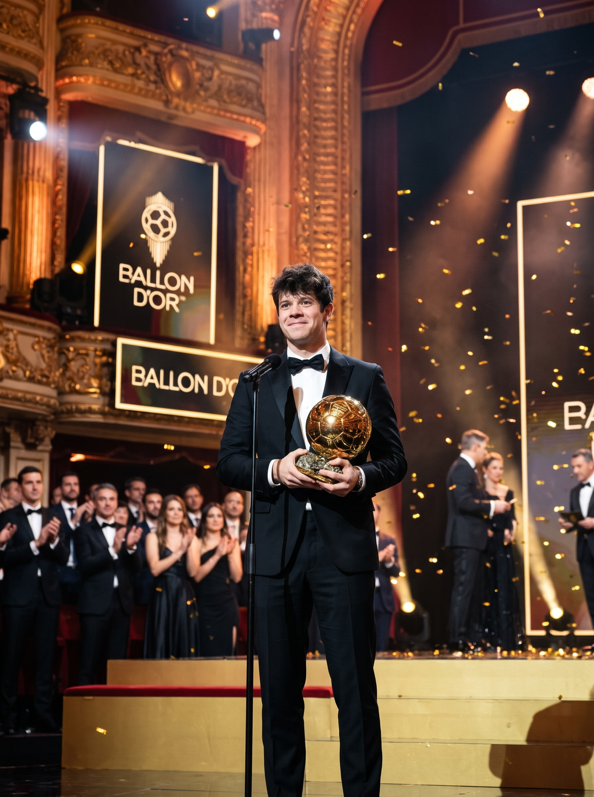

Пять великих эпох «Золотого мяча»
От первых пионеров европейских кубков и тотального футбола до эпохи глобализации и современных тактических гениев.
1950–1960-е: Пионеры и романтики
Ди Стефано, Копа, Суарес, Яшин и Эйсебио
Первое десятилетие существования премии прошло под знаком гегемонии мадридского «Реала» в Кубке европейских чемпионов. Альфредо Ди Стефано дважды поднимал над головой золотую сферу (в 1957 и 1959 годах), а его французский партнер по атаке Раймон Копа стал триумфатором 1958 года. В 1960 году награду получил испанский диспетчер «Барселоны» Луис Суарес Мирамонтес, чей переход в миланский «Интер» положил начало эре «Гранде Интера».
Шестидесятые годы подарили футбольному миру невероятное разнообразие стилей: чехословацкий созидатель Йозеф Масопуст (1962), советский вратарь Лев Яшин (1963), взрывной португальский бомбардир «Бенфики» Эйсебио (1965) и знаменитое атакующее трио «Манчестер Юнайтед» — Денис Лоу, Бобби Чарльтон и Джордж Бест, каждый из которых по очереди удостоился «Золотого мяча».
Смотреть статистику по странам →
1970-е: Тотальный футбол и Кайзер Франц
Революция Йохана Кройфа и Франца Беккенбауэра
Семидесятые годы навсегда изменили тактическую геометрию игры. Амстердамский «Аякс» и сборная Нидерландов явили миру «тотальный футбол», главным олицетворением которого стал Йохан Кройф. Голландский гений первым в истории выиграл три «Золотых мяча» (1971, 1973, 1974), свободно перемещаясь по всему полю и диктуя темп каждой атаки.
Параллельно с ним собственную революцию совершил капитан мюнхенской «Баварии» и сборной ФРГ Франц Беккенбауэр. Выступая на позиции свободного защитника (либеро), он подключался к комбинациям не хуже атакующих хавбеков и дважды (в 1972 и 1976 годах) признавался лучшим игроком Европы. В 1975 году в эту дуэль блестяще вмешался стремительный форвард киевского «Динамо» Олег Блохин.
Изучить рекорды десятилетия →
1980–1990-е: Хет-трик Платини и голландское трио
От французского маэстро до триумфа Серии А
В середине восьмидесятых годов лидер туринского «Ювентуса» и сборной Франции Мишель Платини установил уникальное достижение, выиграв три «Золотых мяча» подряд — в 1983, 1984 и 1985 годах. Сразу за ним, в 1986 году, награду завоевал еще один представитель советской школы — нападающий киевского «Динамо» Игорь Беланов.
Конец восьмидесятых и девяностые годы превратили итальянскую Серию А в сильнейшую лигу планеты. Голландцы Рууд Гуллит и Марко ван Бастен (трехкратный обладатель трофея в 1988, 1989 и 1992 годах) сделали «Милан» непобедимым, а после реформы 1995 года мир увидел триумфы Джорджа Веа, двадцатилетнего феномена Роналдо (самого молодого лауреата в истории в 1997 году), Зинедина Зидана и Ривалдо.
Клубный рейтинг победителей →
2008–2023: Космическая дуэль Месси и Роналду
Пятнадцать лет статистических рекордов
Начиная с 2008 года в мировом футболе развернулось беспрецедентное индивидуальное соперничество между португальцем Криштиану Роналду и аргентинцем Лионелем Месси. За шестнадцать лет они вдвоем завоевали тринадцать «Золотых мячей», забивая по 50–70 голов за сезон и переписывая все бомбардирские книги Лиги чемпионов и испанской Ла Лиги.
Криштиану Роналду стал пятикратным обладателем награды (2008, 2013, 2014, 2016, 2017), побеждая как в составе «Манчестер Юнайтед», так и с мадридским «Реалом». Лионель Месси довел свой абсолютный рекорд до восьми трофеев (2009, 2010, 2011, 2012, 2015, 2019, 2021, 2023), увенчав карьеру долгожданной победой со сборной Аргентины на чемпионате мира в Катаре.
Сравнить показатели рекордсменов →
Новое время: Тактический интеллект
Модрич, Бензема, Родри и смена поколений
В 2018 году хорватский полузащитник Лука Модрич впервые за десять лет прервал дуополию Месси и Роналду, доказав, что управление ритмом игры в центре поля ценится не меньше голов. В 2022 году награду после фантастического плей-офф Лиги чемпионов получил французский капитан «Реала» Карим Бензема.
Наконец, в 2024 году «Золотой мяч» впервые за более чем шестьдесят лет достался испанскому футболисту и опорному полузащитнику — лидеру «Манчестер Сити» и чемпиону Европы Родри. Это решение жюри стало символом новой эпохи, в которой системная работа на команду и футбольный интеллект выходят на первый план.
Перейти к разделу учебных заданий →
Хочешь увидеть полную статистику по клубам и странам?
На следующей странице собраны сводные данные о многократных лауреатах и архитектуре базы данных для серверного программирования.
ПЕРЕЙТИ К РЕКОРДАМ